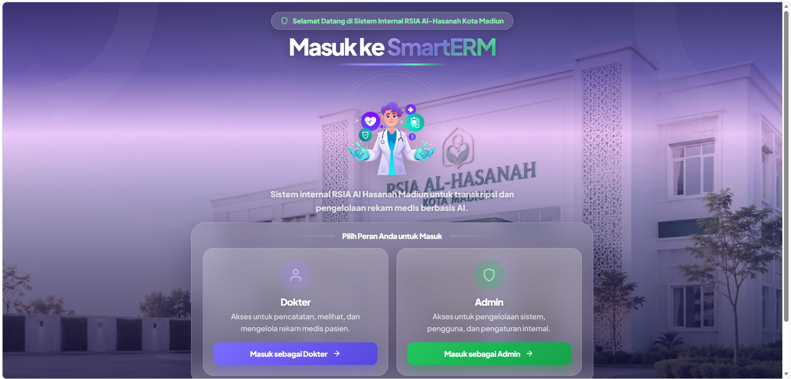
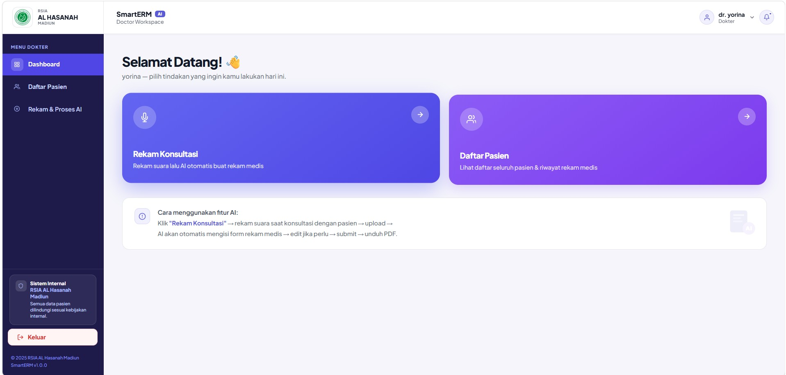
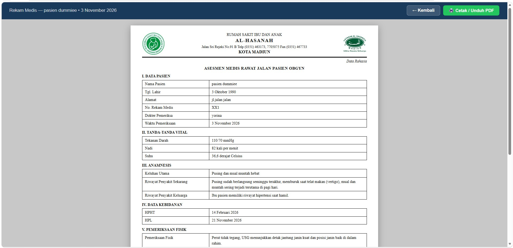

Audio Input
Audio is recorded through the web interface using the browser's MediaRecorder API.
ACADEMIC FINAL PROJECT · 2026
A web-based prototype that transforms doctor-patient conversations into structured anamnesis records using speech recognition and large language models.

SmartERM is an academic prototype designed to support the recording of patient anamnesis information in a web-based environment.
The prototype explores the use of speech recognition and large language models to transform spoken information into structured documentation fields.
The project was developed with reference to the clinical documentation workflow at RSIA Al-Hasanah, Madiun, particularly in the Obgyn context.
Clinical anamnesis involves collecting and documenting information about a patient's condition and medical history.
This project explored how speech-to-text technology and language models could assist the process of organizing spoken information into structured anamnesis fields.
Audio is recorded through the web interface using the browser's MediaRecorder API.
Whisper processes recorded audio and generates a text transcription.
Llama 3 processes the transcription into structured JSON fields.
Extracted information is handled by the application for review and documentation.
I worked on the project from requirements exploration through prototype development and evaluation.
Conducted user interviews and explored documentation needs in the project context.
Reviewed technical references and researched suitable technologies for the prototype.
Worked on the web prototype and its integration with speech recognition and language model services.
Participated in prototype validation, revisions, technical documentation, and project presentation.
Word Error Rate recorded in the speech recognition evaluation.
Portion of validation results categorized as sufficient.
Portion of validation results requiring further revision.
These figures represent the evaluation results recorded during the academic project. They do not establish clinical effectiveness or production readiness.
SmartERM was developed as an academic prototype. It was not deployed as a production hospital system.
The prototype does not provide clinical decision support and does not integrate with SIMRS, BPJS, or SATUSEHAT.


THANK YOU FOR EXPLORING
Feel free to explore more of my projects or get in touch to discuss ideas and opportunities.
Get in touch ↗